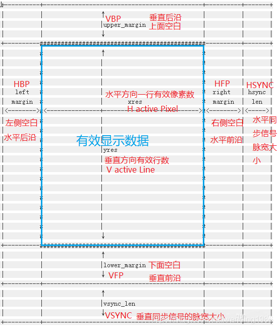
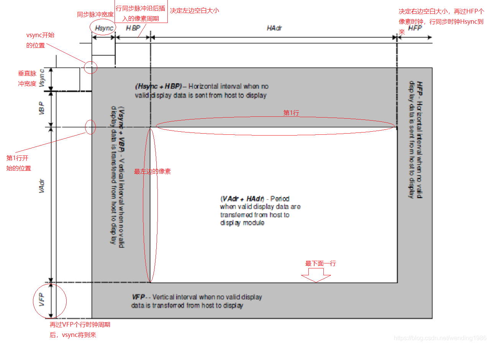
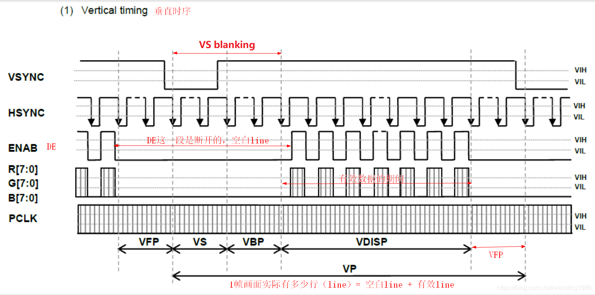
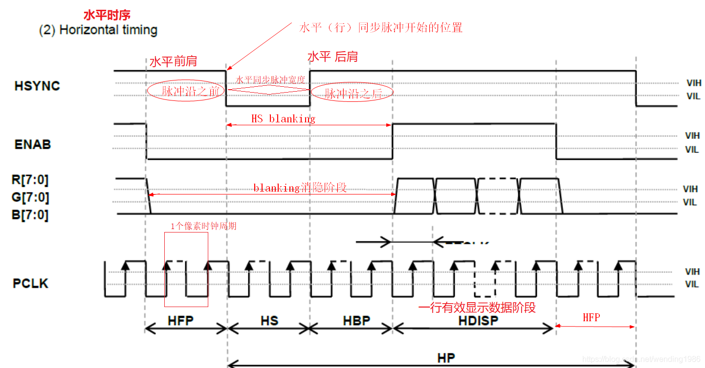

8.8.2. LCD timing
关于LCD timing时序参数常见有三种图:Linux对LCD的抽象图,数据手册中的示意图,Timing时序波形图
8.8.2.1. LCD timing时序示意图
Linux对LCD的抽象图

struct fb_videomode {
const char *name;
u32 refresh; /* 刷新频率或帧率 */
u32 xres; /* 分辨率 x */
u32 yres; /* 分辨率 y */
u32 pixclock; /* 像素时钟 */
u32 left_margin; /* HBP 在每行像素数据开始输出前,需要插入的空闲像素时钟周期数*/
u32 right_margin; /* HFP 在每行像素数据结束到LCD行同步时钟脉冲之间,插入的空闲像素时钟数*/
u32 upper_margin; /* VBP 在垂直同步脉冲之后,每帧开头前的无效行数*/
u32 lower_margin; /* VFP 每帧数据输出结束到下一帧垂直同步时钟周期开始前的无效行数*/
u32 hsync_len; /* HSYNC 行同步时钟脉冲宽度(水平同步)*/
u32 vsync_len; /* VSYNC 场同步(帧同步或垂直同步)时钟脉冲宽度*/
u32 vmode;
u32 flag;
};
常见概念
词汇 |
解释 |
margin |
边缘,显示区域外的空白 |
Hblank |
行消隐,实际就是HFP+Hsync+HBP的时间,因为此期间并未有效显示,看作消隐状态 |
Vblank |
场消隐,实际就是VFP+Vsync+VBP的时间,因为此期间并未有效显示,看作消隐状态 |
数据手册中的示意图

Timing时序波形图
Vertial timing

Horizontal timing

8.8.2.2. LCD相关计算
Pixelclock
pclk=(left_margin+xres+right_margin+hsync_len)*(upper_margin+yres+lower_margin+vsync_len)*refresh
或
pclk=(HBP+xres+HFP+Hsync)*(VBP+yes+VFP+Vsync)*Refresh
mipi clk
H-Total-pixel = H-Active-Pixel + HFP + HBP + HSYNC "有版本会包含skew参数,一般为0"
V-Total-line = V-Active-Line + VFP + VBP + VSYNC
Pclk = H-Total-pixel * V-Total-line * Refresh
Bitclk = Pclk * bpp /lane_num "bpp设置是byte个数，例3byte，就是3*8=24bit"
Mipi Clk = Bitclk / 2 "根据mipi通讯协议，CLK_N、CLK_P这两根时钟线的上升沿/下降沿均可获取数据，双沿采样，所以要除以2"
Mipi Clk = (Pclk * bpp /lane_num) /2 "知道pclk、bpp、lane_num,也可以计算mipi clk"